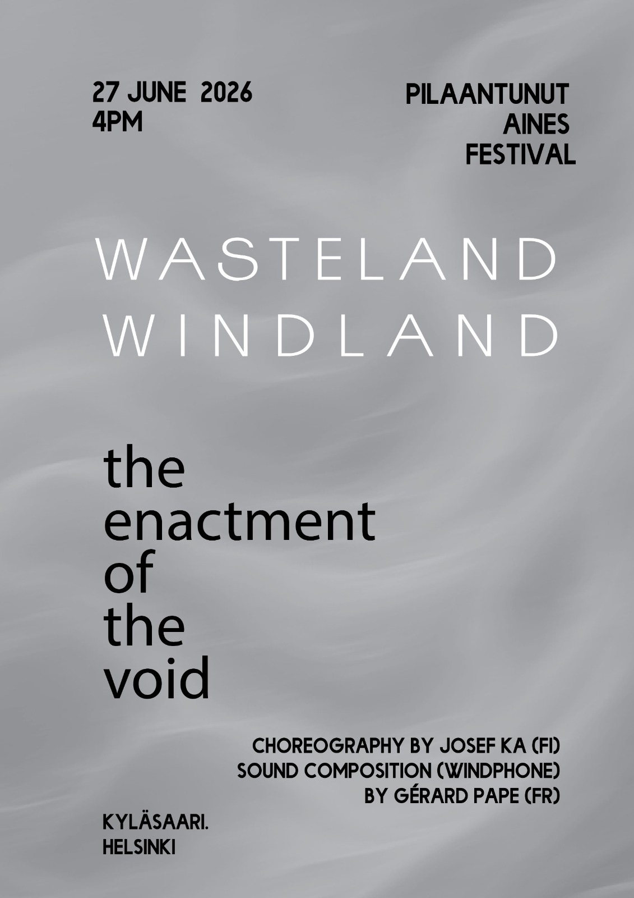
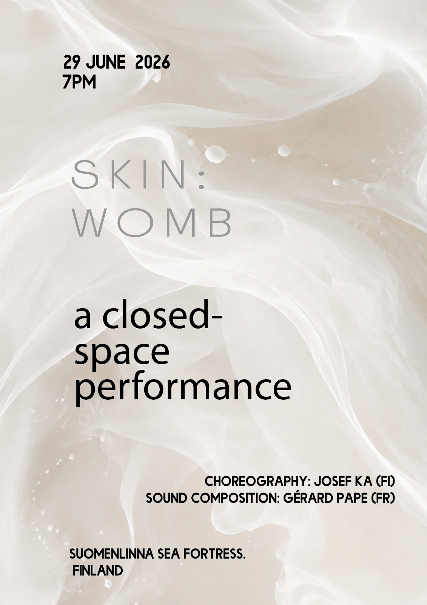
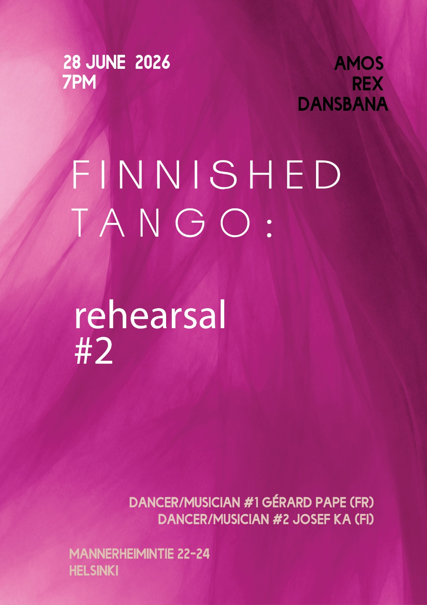
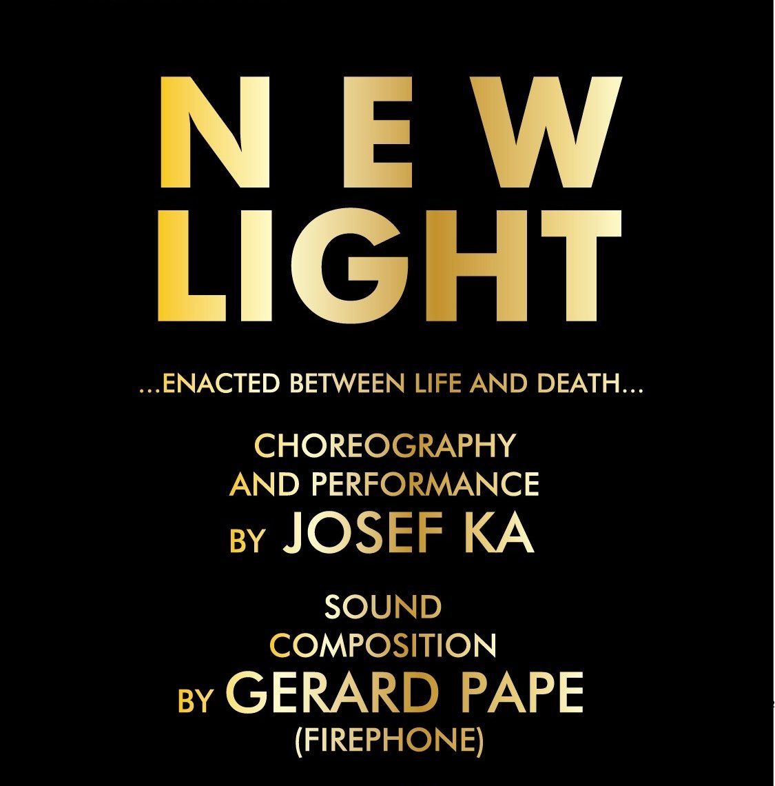

You can view Gerard Pape's past, present and future events like concerts, festivals and more.
2nd performance of « DEATH’s LAST SONGS (MONTBELIARD CONSERVATORY)
FIRST ANNUAL FESTIVAL OF MUSIC AND PERFORMANCE ART at the THEATRE ALEPH (IVRY-SUR-SEINE) Josef Ka : choreography and Gerard Pape : music
World premier performances of Gerard Pape’s « DEATH’s LAST SONGS »(POEMS : Hermann HESSE and Joseph von EICHENDORFF ; PERFORMERS :Nicholas ISHERWOOD, bass voice, Véronique Ngo Sach-Hien, piano). « JONAS » Libretto by Jean-Louis POITEVIN with music by Gerard PAPE. Performers : Daniel MESGUICH, William MESGUICH, VoxNova, Ensemble Yin, Csaba ANTAL, scenographe.
Celebration of Josef Ka’s birthday with participation by Gerard Pape as musical performer and composer.
Pape created electronic music for Josef Ka’s WASTELAND-WINDLAND ,SKIN, and REFINISHED TANGO REHEARSALS 1 and 2. These works were performed in Helsinki, Finland. Pape also partcipated as performer with Josef Ka in REFINISHED TANGO REHEARSALS 1 and 2.



First performance of Josef Ka’s NEW LIGHT with live electronic music by Gerard Pape. Performed at the gallery TAUERNACHE near TAMSWEG, AUSTRIA.

Recording of vocal parts of Jean-Pierre Luminet and Gerard Pape’s ATOMS OF SPACE AND TIME with reciters Gerard Pape and Michel de Maulne and the Vocal Ensemble VoxNova.
First performance of ARTAUD VARIATIONS in collaboration with performance artist/dancer, Josef Ka, at the Théatre ALEPH in IVRY-SUR SEINE.
Concert with works by Gerard Pape and Giacinto Scelsi at Scelsi’s house in Rome. Maurizio Barbetti, viola, Giacomo Piermatti, double bass and Felicita Brusoni, soprano.
Gerard Pape’s HELIOPHONIE with Butoh Dance in the Festival « En Chair et En Son » at the THEATRE ALEPH. Gerard Pape participated as composer-dancer in the work with choreography by Lorna Lawrie and Léone Cats with sound projection by Alexandre Yterce.
HELIOPHONIE in concert at the conservatory of Marseille. Sound projection by Laetitia Miclo.
Premier of ARTAUD LE MOMO by Gerard Pape with text by Antonin Artaud at the Museo Nitsch in Naples. Music by Pape with vocal performance by Pape of Artaud’s text.